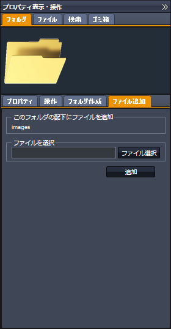

SecretFilesマニュアル
4.SecretFilesサービス(操作編)
4.2基本操作
4.2.1右クリックメニュー
SecretFilesでは、マウスの右クリックを利用することで、スムーズに操作をすることができます。左ペイン及び中央ペインにて、フォルダやファイルを指定した状態でマウスの右クリックをすると、下図のような右クリックメニューが表示されます。
右クリックメニューを利用した操作ステップは以下の３段階です。
(1) 対象（フォルダ、ファイル）を選択する
対象のフォルダ、ファイルを右クリックすると、右クリックメニューが開きます。
(2) 機能を選択する（右クリックメニュー）
右クリックメニューに表示されている機能をクリックすると、操作に必要な画面(右ペイン：プロパティ表示・操作タプ)が自動的に開きます。
(3) 実際の操作
開いた右ペインで操作を行います。
| １）左ペイン | ２）中央ペイン |
 |
右クリックメニューを利用した操作ステップは以下の３段階です。
(1) 対象（フォルダ、ファイル）を選択する
対象のフォルダ、ファイルを右クリックすると、右クリックメニューが開きます。
(2) 機能を選択する（右クリックメニュー）
右クリックメニューに表示されている機能をクリックすると、操作に必要な画面(右ペイン：プロパティ表示・操作タプ)が自動的に開きます。
(3) 実際の操作
開いた右ペインで操作を行います。
| 【フォルダ操作】 | |||
|  | |||
| 【ファイル操作】】 | |||
| 【検索】 | 【ゴミ箱】 | ||
 |
|||